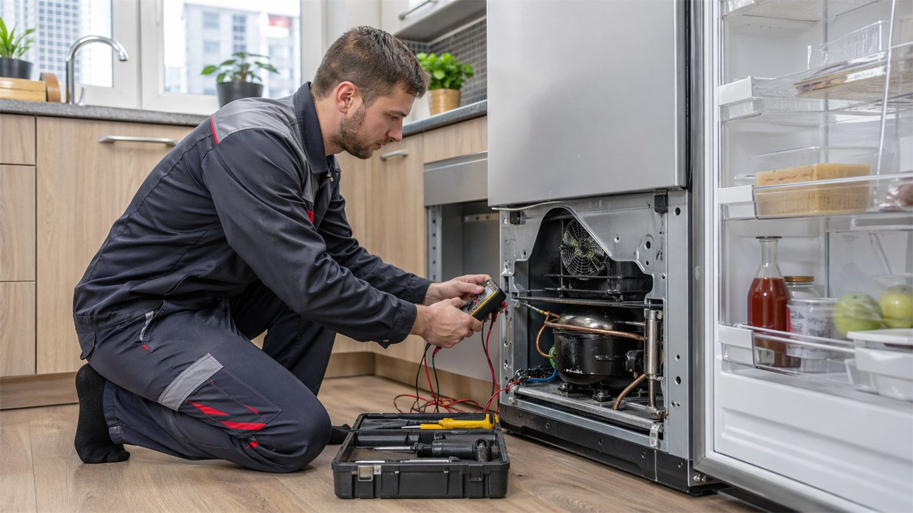
Ремонт холодильников
Если холодильник плохо морозит, течет, шумит или не включается, мастер Remtehcom проведет диагностику и выполнит ремонт холодильника в Туле с гарантией.
Подробнее об услуге
Отдельные SEO-страницы услуг помогут быстро найти нужный ремонт: холодильники, стиральные машины, посудомойки, телевизоры, плиты, кофемашины и другая техника.
На каждой странице указаны частые поломки, ориентировочные цены, FAQ и смежные услуги.

Если холодильник плохо морозит, течет, шумит или не включается, мастер Remtehcom проведет диагностику и выполнит ремонт холодильника в Туле с гарантией.
Подробнее об услуге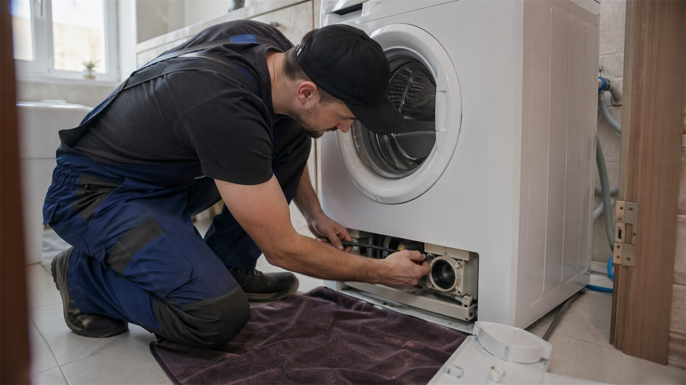
Remtehcom выполняет ремонт стиральных машин на дому в Туле: от замены насоса и нагревателя до устранения протечек, ошибок и проблем с отжимом.
Подробнее об услуге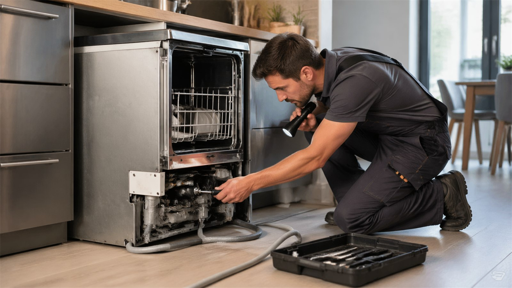
Восстанавливаем работу посудомоечных машин на дому: устраняем протечки, ошибки, проблемы со сливом, набором воды и нагревом.
Подробнее об услуге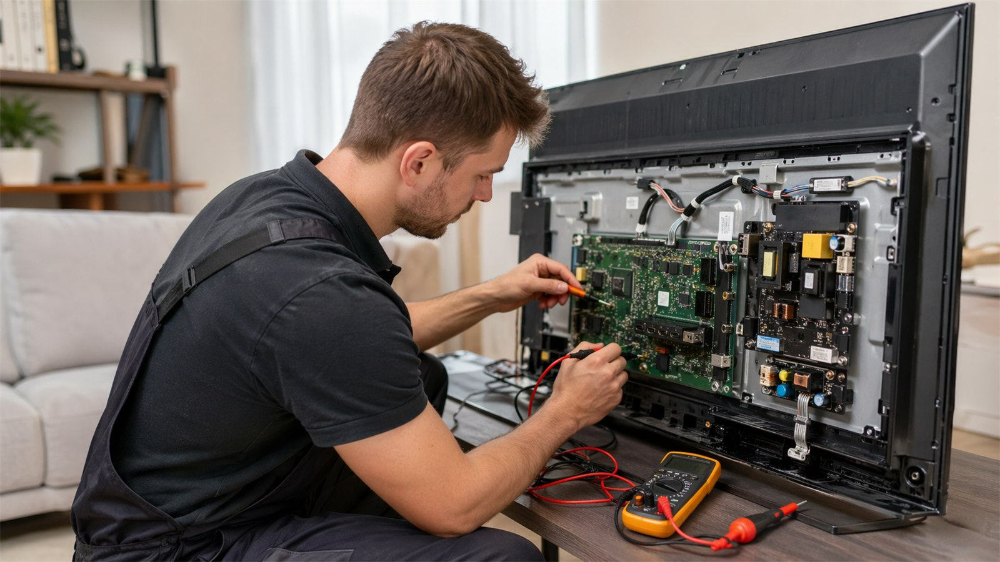
Ремонтируем LED, LCD и Smart TV в Туле: проблемы с питанием, подсветкой, изображением, звуком, разъемами и программной частью.
Подробнее об услуге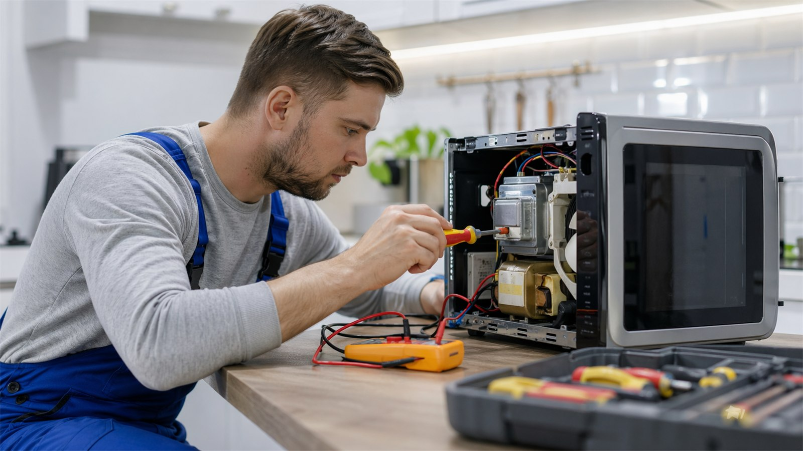
Выполняем ремонт микроволновых печей в Туле: устраняем проблемы с нагревом, питанием, тарелкой, дверцей и панелью управления.
Подробнее об услуге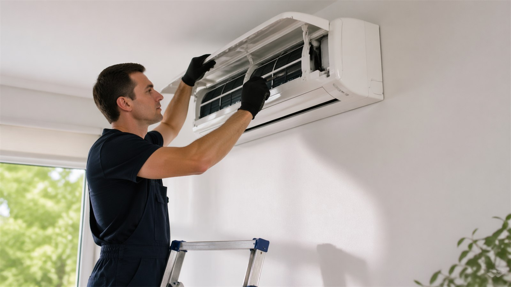
Проводим диагностику, ремонт и обслуживание кондиционеров в Туле: устраняем слабое охлаждение, шум, протечки и ошибки управления.
Подробнее об услуге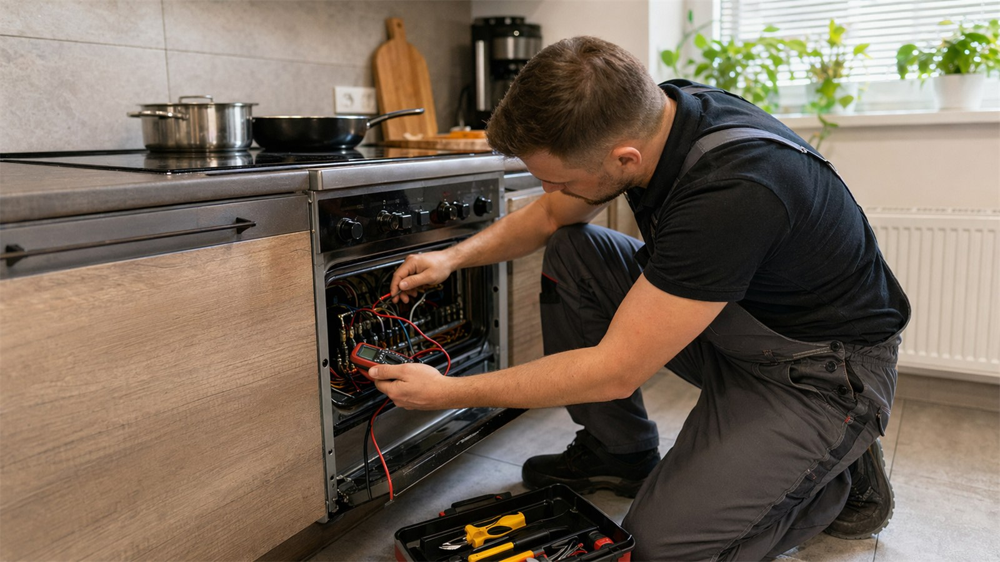
Ремонтируем электрические плиты на дому в Туле: конфорки, переключатели, термостаты, проводку, индикацию и узлы нагрева.
Подробнее об услуге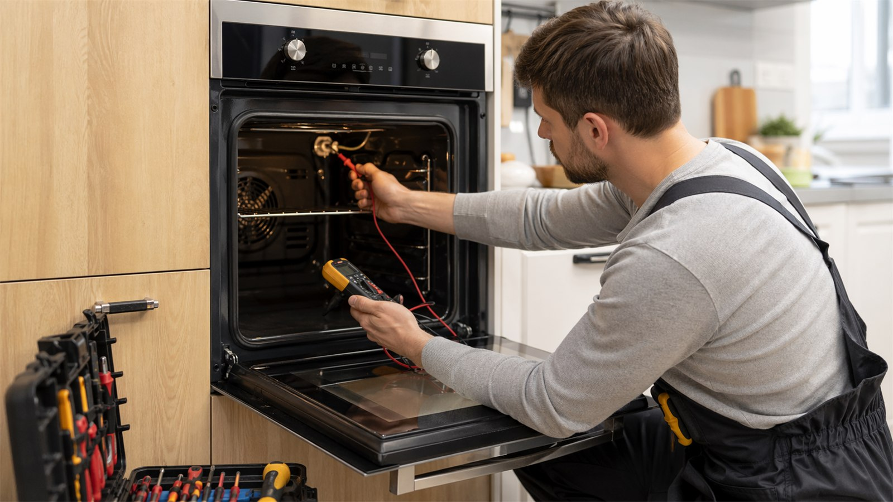
Восстанавливаем работу электрических духовых шкафов: нагрев, конвекцию, термостаты, таймеры, переключатели и электронные модули.
Подробнее об услуге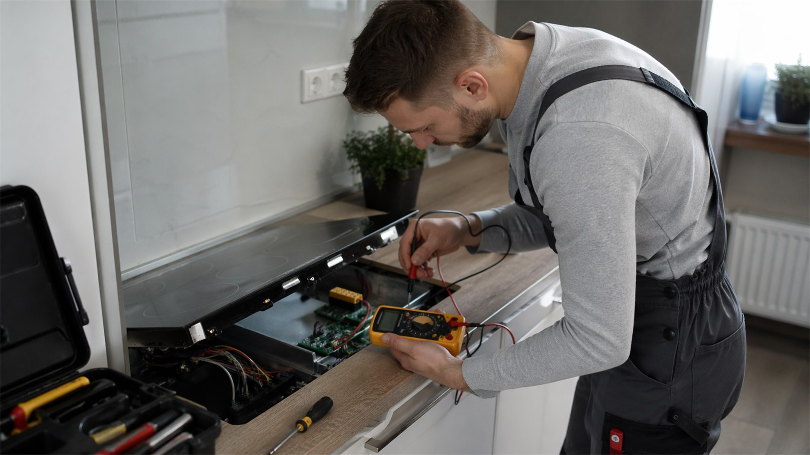
Ремонтируем электрические и индукционные варочные панели: сенсорное управление, конфорки, питание, ошибки и перегрев.
Подробнее об услуге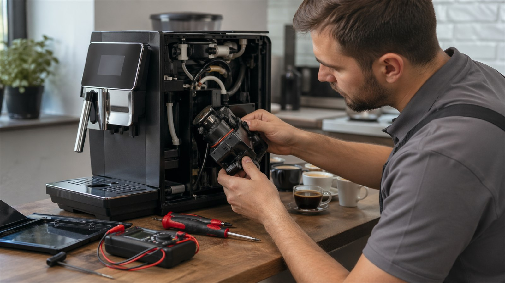
Обслуживаем и ремонтируем кофемашины в Туле: гидросистема, кофемолка, заварочный блок, нагрев, помпа, капучинатор и ошибки.
Подробнее об услуге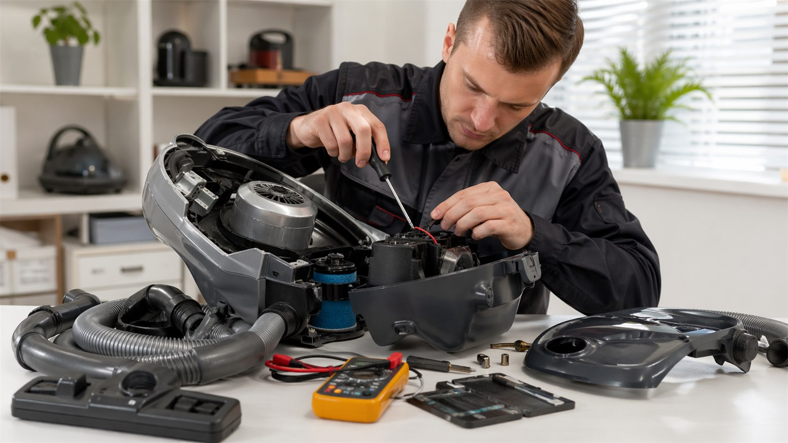
Ремонтируем бытовые, моющие, вертикальные и робот-пылесосы: питание, двигатель, аккумуляторы, зарядку, тягу и засоры.
Подробнее об услуге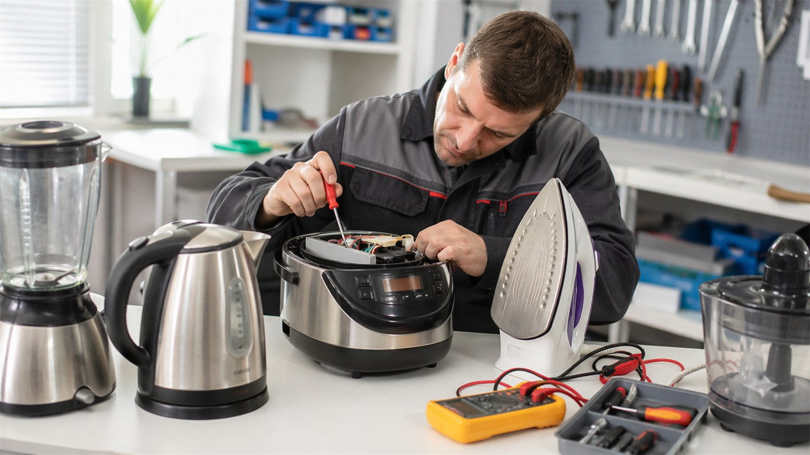
Помогаем восстановить мелкую бытовую технику: мультиварки, утюги, блендеры, фены, чайники, мясорубки и кухонные приборы.
Подробнее об услугеЭти формулировки закрывают и коммерческий спрос по услугам, и информационные запросы по симптомам, ошибкам и типовым неисправностям.
Цены зависят от модели, характера поломки и деталей. Точную сумму мастер называет после диагностики.
| Услуга | Ориентир | Страница |
|---|---|---|
| Ремонт холодильников | от 1300 руб. | Подробнее |
| Ремонт стиральных машин | от 1400 руб. | Подробнее |
| Ремонт посудомоечных машин | от 1000 руб. | Подробнее |
| Ремонт телевизоров | от 1700 руб. | Подробнее |
| Ремонт микроволновок | от 1000 руб. | Подробнее |
| Ремонт кондиционеров | от 2500 руб. | Подробнее |
| Ремонт электроплит | от 1500 руб. | Подробнее |
| Ремонт духовых шкафов | от 1300 руб. | Подробнее |
| Ремонт варочных панелей | от 2000 руб. | Подробнее |
| Ремонт кофемашин | от 2500 руб. | Подробнее |
| Ремонт пылесосов | от 600 руб. | Подробнее |
| Ремонт мелкой бытовой техники | от 800 руб. | Подробнее |
Диагностика, выезд и детали согласуются до начала работ. Итоговая стоимость зависит от состояния техники и наличия комплектующих.
Позвоните в Remtehcom или оставьте заявку. Мы уточним тип техники, симптомы неисправности и согласуем удобное время диагностики.